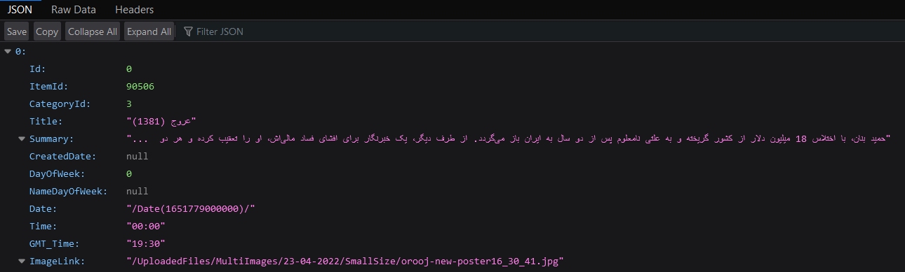

تو خونه ما خیلی از اوقات شبکه آیفیلم در حال پخشه! بعضی مواقع یکسری سریال ها رو انقدر پخش میکنن که آدم حالش بهم میخوره! البته من عموما تلویزیون نگاه نمیکنم ولی صداش میاد! یکدفعه این سوال برام پیش اومد که کدوم سریال/فیلم از همه بیشتر پخش شده؟ اول که توی توییتر ایده رو مطرح کردم خیلی ها گفتند مختارنامه، یوسف پیامبر و …اما من میخواستم ببینم جواب واقعا چیه؟! سایت iFilm رو باز کردم و بخش جدول پخش رو آوردم :
دیدم جدول پخش هر روز رو نشون میده. یه ذره پکت های ارسالی به سایت رو بررسی کردم و متوجه شدم جدول پخش هر روز رو از لینک زیر میگیره :
یه بخش تاریخ داره. تاریخ های مختلف رو امتحان کردم و دیدم جدول پخش روز های گذشته و حتی آینده (تا آخر هفته) رو هم نشون میده :

فرمت خروجی هم json بود و کار رو خیلی ساده میکنه! منم یه اسکریپت ساده نوشتم و تمام تاریخچه رو استخراج کردم. قدیمی ترین آرشیوشون برای ۲ سپتامبر سال ۲۰۱۶ بود که تا الان میشه 5 سال 7 ماه 27 روز آرشیو! البته من نمیدونم صحت دیتای آرشیو چقدره ولی نتایجی که در ادامه میگیرم بر اساس این دیتاست!حالا بریم سراغ تحلیل! طبق اطلاعات به دست آمده از آرشیو جدول پخش، تا الان ۸۲۹ عنوان از شبکه آیفیلم پخش شده. تعداد دفعاتی که هر قسمت از سریال در نتایج جدول پخش اومده رو در لینک زیر قرار دادم :
لیست ۲۰ تا فیلم/سریالی که بیشتر از بقیه پخش شدند عبارتند از :
بدون شرح (1381)-321
کمربندها را ببندیم (1383)-281
مسافران (1388)-210
قصههای تبیان (1394)-206
باغچه مینو (1381)-202
نفس گرم (1394)-197
امروز و فردا (1390)-189
زندگی به شرط خنده (1385)-183
روز رفتن (1385)-177
پاورچین (1381)-175
باجناقها (1383)-163
ریحانه (1384)-162
کیمیا (1392)-161
نقطه چین (1383)-157
پرستاران (1395)-156
دیوار به دیوار (1396)-144
دلنوازان (1388)-143
شمس العماره (1388)-143
کت جادویی (1378-1377)-138
یادداشت های یک زن خانهدار (1393)-138
مقابل هر اسم تعداد تکرار رو نوشتم. مثلا سریال بدون شرح که ۳۲۱ بار پخش شده یعنی چی؟ یعنی ۳۲۱ بار در جدول پخش بوده. نه اینکه کل سریال ۳۲۱ بار پخش شده! مجموع قسمت هایی که پخش شده ۳۲۱ بار بوده. البته با توجه به اینکه آیفیلم هر فیلم رو در روز سه بار پخش میکنه (یک بار اصلی و دوبار تکرار) پس باید اعداد رو بر ۳ تقسیم کنید. میبینید که نتیجه چیزی نیست که خیلی ها فکر میکردند!
nb.neighbours()
| title | date | |
|---|---|---|
| prev | ربات فیواستار فارسی زیر ذرهبین! | ۱۴۰۱/۰۲ |
| next | خیابانهای تهران زیر ذرهبین! (بخش اول) | ۱۴۰۱/۰۲ |